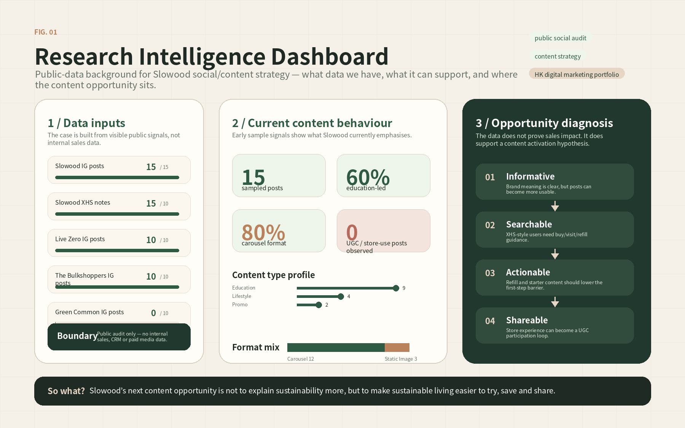
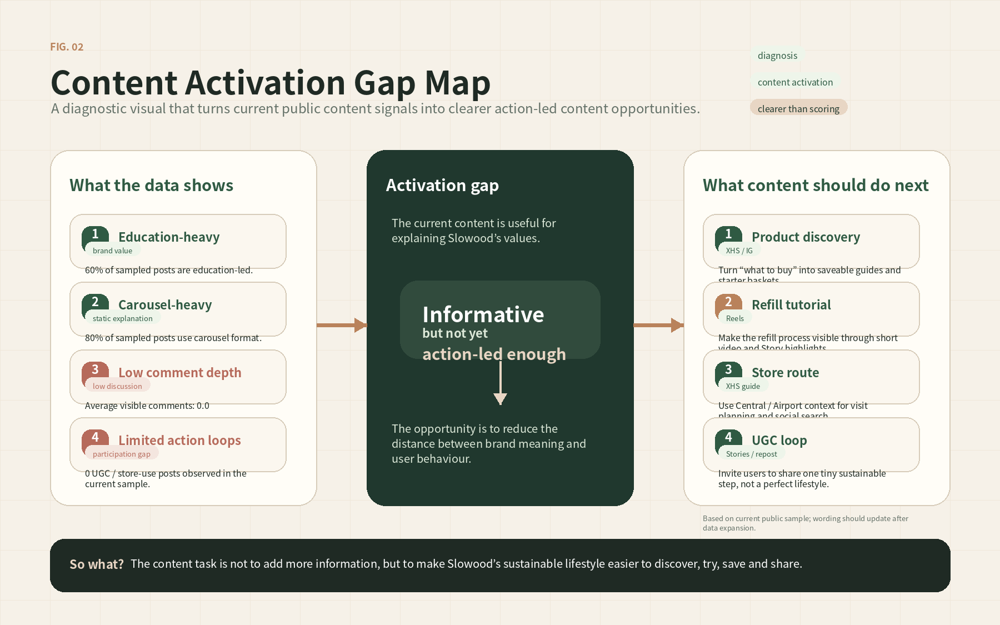
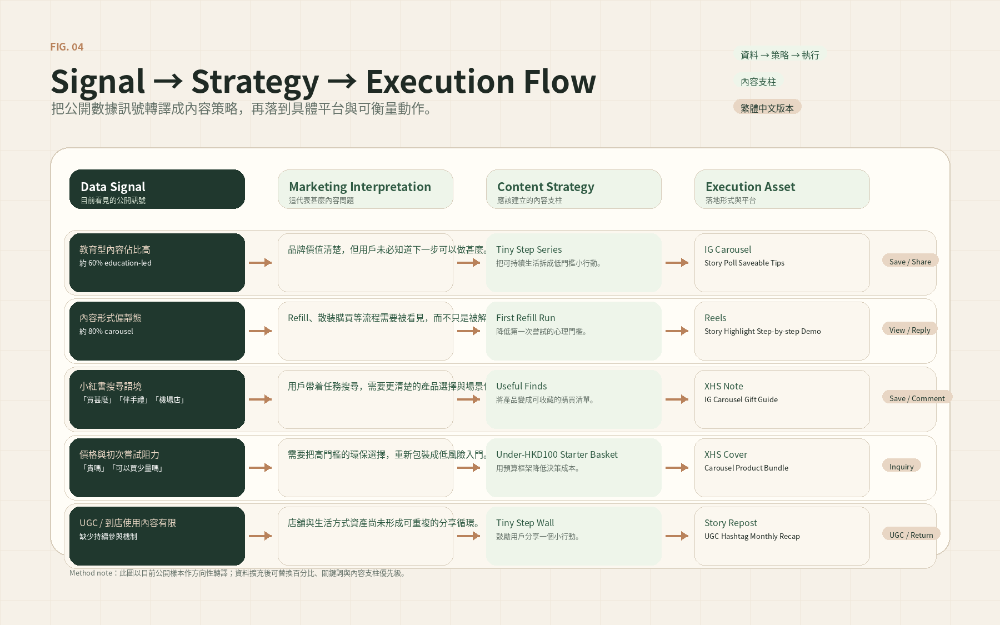
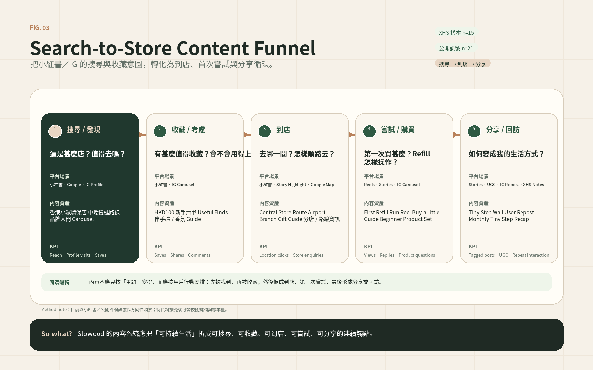
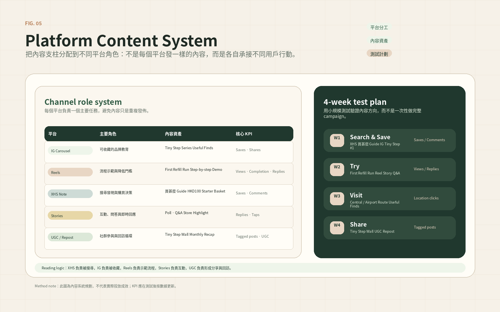
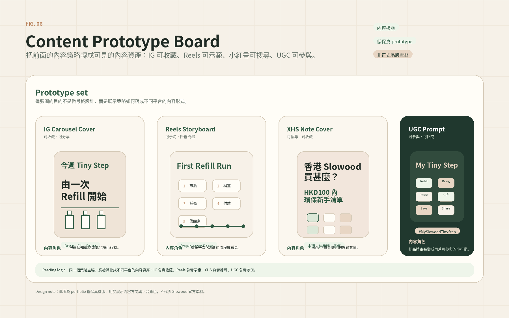

Research
Public account audit, Xiaohongshu search review, competitor reference and user-language coding.
Public-data-based portfolio strategy case
A public-data-based content strategy project for a Hong Kong sustainable lifestyle retailer.
This project uses public social content, Xiaohongshu search signals, competitor references and user comments to explore how Slowood could make its sustainable lifestyle message more searchable, practical and shareable.
Self-initiated portfolio case. Not an official Slowood project. The analysis uses public samples and directional insight, not complete platform data or real campaign results.
01
Slowood has a clear sustainable lifestyle proposition and multiple retail touchpoints. This case reviews current public samples to diagnose content opportunities and propose a practical social content system.

02
Public account audit, Xiaohongshu search review, competitor reference and user-language coding.
Content gap diagnosis, platform content planning and low-fidelity content prototype direction.
Visual reporting, KPI framework and cautious limitation notes for public-data-based analysis.
03
How can Slowood make its sustainable lifestyle message more searchable, practical and shareable through public-facing social content?
04
Sampled posts, visible engagement signals, content format and caption direction.
Locations, Slo-news, Snacking, Pop Ups and Refill information structure.
Search titles, visible likes/saves, user motivation and barrier language.
Store experience, product mentions and visit or purchase triggers.
Live Zero, The Bulkshoppers and sustainability-related content mechanics.
Data limitation: this is a public-data-based sample. It should be read as directional insight, not a complete account performance audit.
05
Slowood has strong brand assets, but sampled posts show limited visible comment participation.
Xiaohongshu and review signals often point to what to buy, where to visit, what smells good and what is worth saving.
Store space, refill moments, scent products and gift occasions can become stronger social content prompts.

06
The content opportunity is not to claim proven performance improvement. It is to translate Slowood's sustainable lifestyle message into content that users can search, save, answer and reuse.
07
Use public signals to guide a proposed content system: public signals → content diagnosis → strategy logic → platform execution → proposed KPI testing.

08
Support first-time purchase decisions with starter baskets by need.
Use scent-interest signals to reduce product uncertainty.
Connect Central, airport and weekend routes to visit occasions.
Turn refill and sustainability education into repeatable micro-actions.
09

10

11
12
Proposed KPI framework only. It does not claim actual campaign results.
13
14

15
This project demonstrates a public-data workflow rather than a completed campaign. The value is in connecting sampled public signals, content diagnosis, platform planning and proposed KPI testing while keeping claims cautious and evidence-bounded.
Download research pack